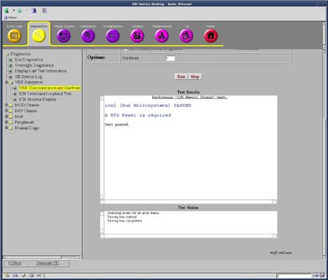

Operating Documentation
Direction 5500113, Rev# 3
Discovery MR750 3.0T Service Methods
Module Version 2.0, Version Date 10/24/08
Operating Documentation |
Diagnostics => VRE Subsystem => VRE Communication and Hardware Diagnostic
The purpose of this diagnostic is to stress the memory on the ICN. While this diagnostic is designed to stress the memory, it also makes heavy use of the DMA, main disk drive, and motherboard of the respective ICN.
ICN Memory
ICN Disk Drive (Slot 0)
ICN Motherboard
Host Ethernet Interface
Host to VRE Switch Ethernet Cable
VRE Switch to ICN Ethernet Cable
ICN Ethernet Interface
VRE Switch
Silver SUN ICN or black Dedicated Computing ICN
ICN(s) turned on and at least one network connection from ICN motherboard Ethernet port(s) to Host
Illustration 1: VRE Hardware Communication Block Diagram

Select the ICN Memory Stress Diagnostic.
Click [Run]. (The test takes about 15 minutes.)
| NOTE: | Once [Run] is clicked, do not click anywhere else in the Common Service Desktop until the test is completed. To abort the test prior to its completion, click [Stop]. |
Verify each tested ICN passed the diagnostic.
Illustration 2 is an example of the output for a system containing a SUN ICN.
Illustration 2: Test Completion

Perform a TPS reset after the test is completed.
Table 1: Diagnostic Results
| Fault | Problem Description | GE Field Action |
| FAILED | The ICN has failed the diagnostic. |
|
| ICN Disabled | The ICN has been disabled. | Check Utilities => VRE => Disable/Enable ICNs. |
| No ICNs Defined | Host has no ICNs defined. | Reconfigure the VREs. |
| PASSED | The ICN passed this Diagnostic. | No further action needed. |